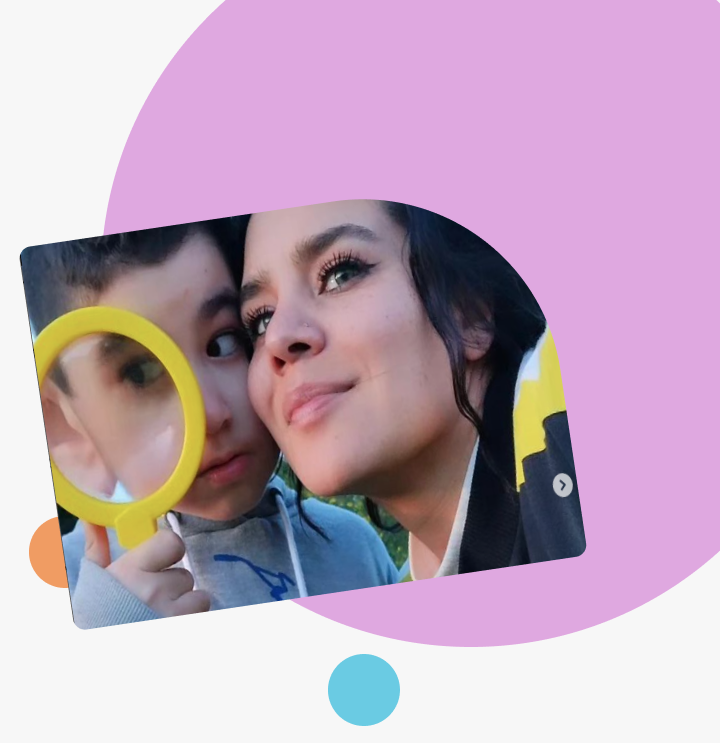

Motivos para CreSer

Desde 2020, en pandemia y con cuarentenas, iniciamos una propuesta que pone en el centro a la niñez, su felicidad y bienestar para encontrarnos en un lugar seguro, de respeto mutuo, equitativo y amoroso. La propuesta CreSer, de Fundación Entornasol (programas TEA Time), reúne a mujeres, madres y profesionales con el objetivo de crear espacios de convivencia y aprendizaje para niñas, niños y jóvenes autistas, que favorezcan el desarrollo de sus potencialidades, a la vez que brindan los apoyos necesarios para los desafíos propios de su condición. Creamos programas de pedagogía terapéutica, holísticos y a través de un paradigma ecológico. Trabajamos con la mirada en la comunidad, acompañando a niños y sus familias, desarrollando instancias para la formación y la divulgación de enfoques de vanguardia en educación y terapia.
Esta propuesta, nace en 2020 bajo el alero de Corfo a través del comité de desarrollo productivo. regional del Biobío, en la línea de Innovación Social. Actualmente es desarrollada por la Fundación Entornasol, en alianza con organizaciones y personas comprometidas con la co-construcción de un mundo que convive y se enriquece de la diversidad realzando la neurodivergencia.

Los brotes nuevos requieren nutrientes
Cuando pudimos volver a las Aulas
En un año nos desplegamos en cada espacio que nos acogió: Espacio escuela de la tierra, Bio huerta, talleres de arte y encuentro con caballos, bosque, agua y paddle sup (tabla en el agua) , cocina sensorial, juegos sensoriales, parques de juegos, canchas, biopark y espacios recreativos. Nos desplegamos alrededor del entorno que nos ofrece nuestro territorio, adaptándonos a las diversas condiciones, intereses y necesidades de apoyo generando adecuaciones. Sin embargo también hemos recibido discriminación. Como en la tierra sucede, las buenas semillas necesitan crecer en las condiciones óptimas. Con tristeza en ocasiones tuvimos que dejar espacios que no fueron aptos para convivir y cerraron sus puertas a la neurodivergencia.
Misión y Visión
Misión: Brindar espacios de convivencia y aprendizaje para niñas, niños y jóvenes autistas, estimular habilidades individuales y colectivas y favorecer el desarrollo de sus potencialidades, intereses profundos, conocimientos, habilidades, actitudes y aptitudes; Acompañar hacia niveles creativos de expresión y comunicación, durante el proceso de aprendizaje en armonía con toda la comunidad. A su vez, busca asegurar los apoyos necesarios para los desafíos propios de su condición.
Visión: Motivar a la sociedad a seguir evolucionando como seres humanos; A través nuestro enfoque y metodología, contribuir y replicar en diversos entornos, espacios, organizaciones y grupos que lo requieran y valorar una verdadera convivencia neurodeversa, favorecer el desarrollo de las potencialidades y responder de manera equitativa, justa, armoniosa a las necesidades, intereses y sueños de los y las personas autistas a nivel regional, nacional y mundial.
3 Hitos de Nuestra Historia


Nuestro Equipo Multidisciplinario
Una creciente demanda por servicios especializados para niñas y niños con altas necesidades de apoyo que no encuentran respuestas en los espacios convencionales.
Por ello es necesario: contar con un equipo humano especializado (en constante capacitación) y apoyos suficientes que acompañen las necesidades emergentes de cada niño, niña y familias que conviven con el autismo.
Trabajamos con pedagogas, terapeutas y profesionales con trayectoria, experiencia y amor por el autismo; Reciben formación en nuestras metodología que permanentemente requiere actualización.
Nuestro mayor desafío es sostener y hacer crecer este equipo de talentos humanos.

Nuestro Espacio: Co-creando entornos seguros y adecuados
Aulas para Todos y Todas

Entornasol, es un espacio que integra un programa innovador dirigido a niños,niñas y jóvenes autistas, neurodivergentes. Dicho programa se basa en una co-creación holística y un modelo ecológico, con un enfoque de trabajo transdisciplinario de pedagogía terapéutica. Aulas flexibles y vinculación con el entorno, que tiene como foco la particularidad, los tiempos y ritmos de cada niña, niño y joven autista. Su espacio físico está emplazado en un Vagón de tren frente a parque laguna grande y sala sensorial en Balneario de laguna chica de San Pedro de la Paz. Región del Bío Bio, y aulas vivas abiertas en entornos naturales como son bosques, lagunas, parques.
Los espacios de convivencia, entornos de aprendizajes, juego e interacción, consideran ciertas condiciones mínimas que cada aula debe contemplar:
- Espacio óptimo de 25 a 30 m2 de superficie.
- Contar con luz natural e iluminación de calidad.
- Color de las paredes armónico, prefiriendo tonos pasteles, luminosos y amables.
- La temperatura debe ser idónea al ambiente (mínimo de 15°C).
- Poseer viga o estructuras para darle flexibilidad, movimiento y colgar columpios sensoriales.
- Inserto o cercano a áreas verdes, espacios de aprendizajes vivos.
- Baño con espacio y elementos para limpiar y cambiar de ropa a niños.
- Espacios adecuados para preparar, manipular alimentos.
- Sala de apoyo individual y regulación emocional.
- Elementos de seguridad.